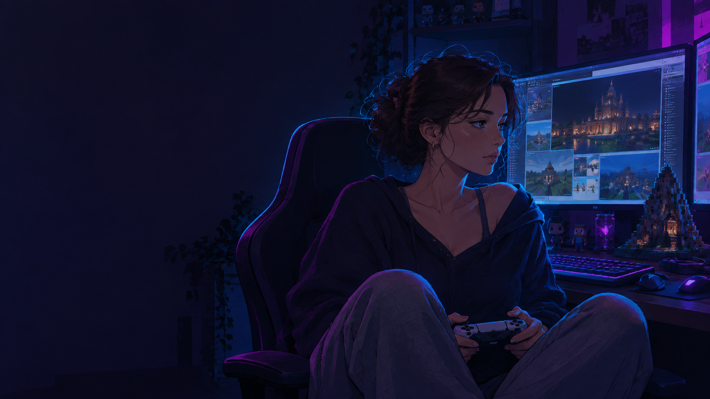
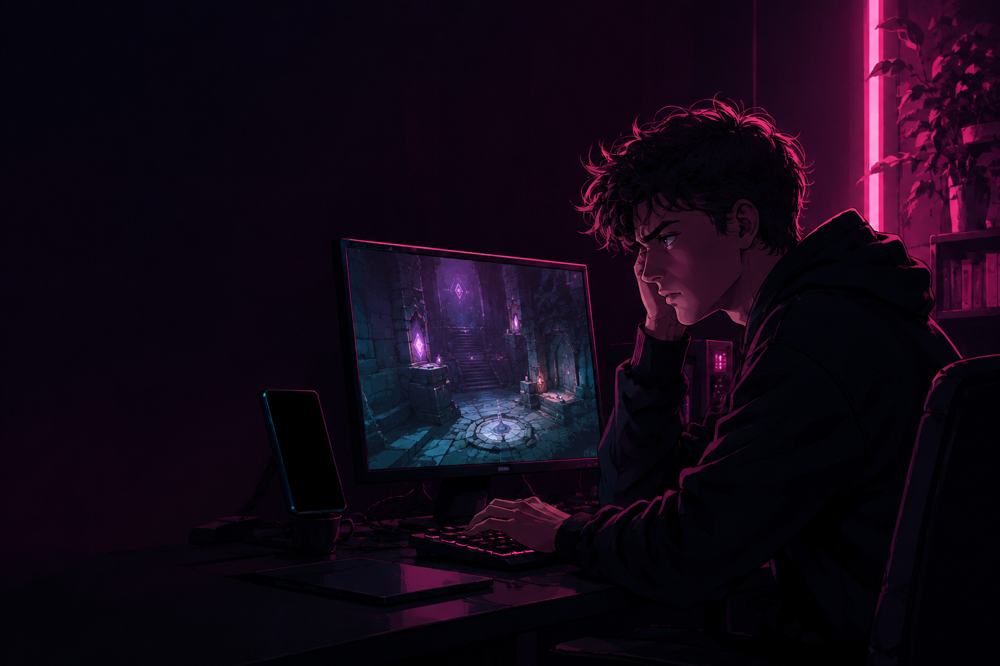
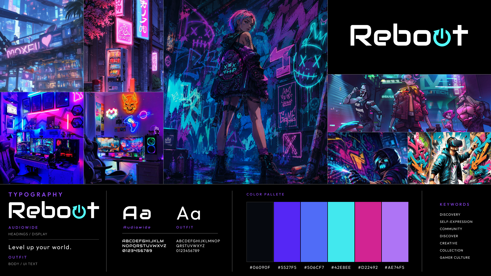
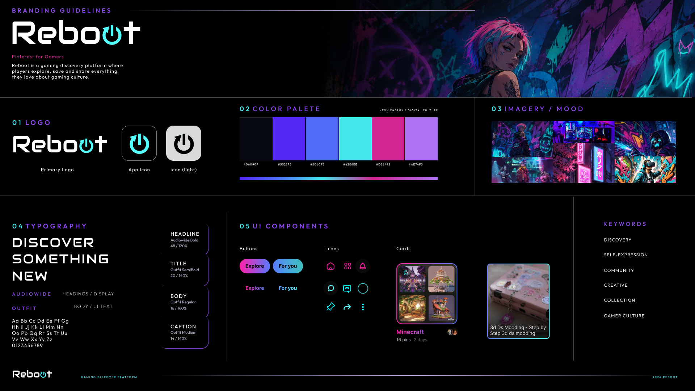

One place to save outfits, builds, clips, and step-by-step guides, instead of five apps and a camera roll full of screenshots.
Fast, scrollable discovery for outfits, builds, and clips.
Boards and sub-boards keep every idea sorted and findable.
Step-by-step help so no one leaves the app to get unstuck.
TikTok/Pinterest research: visual browsing is now central to how people find things.
UI patterns for scrollable, intuitive discovery apps.
Pinterest's co-founder built the visual-discovery model Reboot borrows from.
Striking gameplay images treated like digital art, but no organization tools.
Great for curated boards, but not built for gamers specifically.
March 2026
Across the session and published app reviews: gamers juggle Pinterest, TikTok, and screenshots but lose track of ideas. They want quick visual discovery in one app.
Click a name to see that persona.

A design student who builds elaborate Minecraft worlds for class projects and wants her group's inspiration in one shared place instead of scattered screenshots.
"I need one place to keep all my game ideas so I can find them easily."

Picked up Majora's Mask again after years away and keeps hitting puzzles he barely remembers, without wanting to hunt through five different forums for help.
"I just want to know where to go next without hunting five forums."
Collects Nintendo 3DS themes that match her exact aesthetic, and once she finds one she loves, she wants a fast way to find ten more just like it.
"When I find a theme I love, I want ten more just like it."
Teacher says the class can use Minecraft for their design project.
Screenshots pile up across PS5, phone, and computer.
She opens Reboot, an inspiration app made for gamers.
Organizes builds into boards: Buildings, Outfits, Maps.
Finds new inspiration and shares her board with the group.
The group builds together, referencing one shared board.

Click a name to see that task flow.
Task: Ethan is stuck in a game he hasn't played since childhood and needs a clear way forward.
Taps Explore, finds the Majora's Mask walkthrough he needs.
Opens it and gets a location-by-location step-by-step guide.
Follows exact instructions instead of guessing what to do.
Clears the puzzle without ever leaving the app.
Why it matters: Ethan has plenty of inspiration. What he lacks is guidance he can trust.
Task: find info to add to a board for her class project, and share it with her group.
Opens Boards and sees her categories.
Taps Minecraft, arrives at organized sub-boards.
Saves new pins into the right sub-board as she finds them.
Shares the whole board with her group.
Why it matters: Ava needs one shared, organized space her whole team can reference.
Task: Lily found a theme she loves and wants ten more just like it.
Scrolls For You, finds a 3DS theme that matches her aesthetic.
Taps it, unlocks a Similar Pins panel.
Saves the ones that fit her exact vibe.
Builds a personal collection of only what she'd use.
Why it matters: Lily can find one good reference. Finding the next ten is where she stalls.
3 gamers, one room, 1 session. Watched them use the app together and let the conversation happen, not just individual tasks.
Faster, more visual discovery: mod pack showcases, gameplay highlights, and console tutorials, surfaced the way gamers actually browse.
View Prototype →Sub-boards for every project, so builds, outfits, and inspiration stay sorted instead of buried in one long scroll.
View Prototype →Step-by-step guides for the puzzles and bosses you barely remember, without ever leaving the app to hunt through forums.
View Prototype →
Balancing visual discovery with usability meant constantly weighing how much inspiration to surface against how easy the app stayed to navigate. Letting real tester feedback, not just my own assumptions, drive decisions like the bottom nav bar and rounded corners made the biggest difference.
Personalization is the obvious next step: surfacing build and mod pack recommendations from what someone already saves, alongside what is trending. In-app sharing would let groups collaborate on one board directly, and community features could turn Reboot into a space gamers actually hang out in.